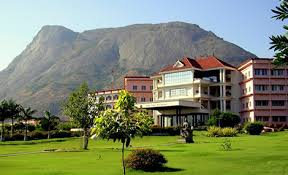

Amrita University's Coimbatore campus started
in a hidden village named Ettimadai provides
over 120 UG, PG and doctoral programs to a
student population of over 12,000 and
faculty strength of nearly 1500
